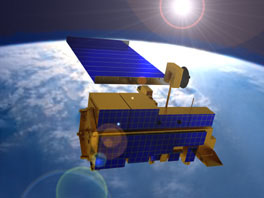
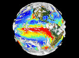
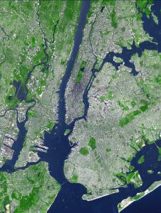
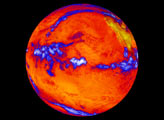
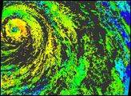
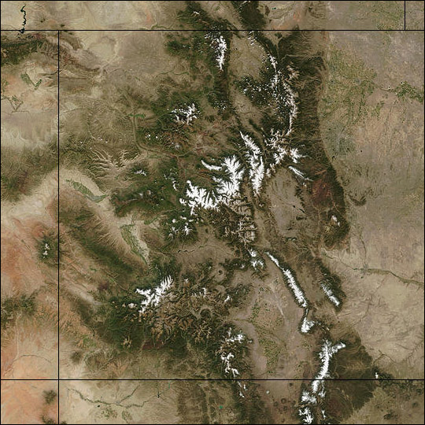
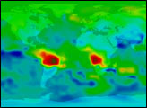

{% include google_analytics.ssi %}Overview of NASA's Terra satellite

Computer rendition of Terra by NASA.John Maurer
{% include address.ssi %}
November, 2001
As an employee at the National Snow and Ice Data Center (NSIDC) from 2001-2009, I was part of an organization responsible for archiving, distributing, and supporting certain snow and ice related data products from the Moderate-Resolution Imaging Spectroradiometer (MODIS) instrument aboard NASA's Terra satellite, which was launched December 18, 1999. Providing a suite of earth observations of various sorts, one objective of MODIS is to map snow cover and sea ice across the globe on a daily basis to help scientists assess and better predict global warming. This site provides an overview of the Terra satellite and its five sensors (ASTER, CERES, MISR, MODIS, and MOPITT), which I have put together from various online sources.
Introduction • Instruments onboard Terra: ASTER, CERES, MISR, MODIS, MOPITT • References

Global observations from the Terra satellite.Climate warming, rising sea level, deforestation, desertification, ozone depletion, acid rain, and reduction of biodiversity are all examples of ongoing global environmental change that are increasingly affecting our planet. The well-being of human beings and life at large may become largely dependent on our ability to understand the factors behind these events so that we can predict future impacts and take appropriate action to prevent them from getting any worse. Scientific research on stratospheric ozone in the 1970's, for example, led to the 1987 Montreal Protocol for worldwide reduction in production of chlorofluorocarbons (CFCs). Causes for global change may be natural as well as human-induced, furthermore, and may be persistant and long-term or just part of a normal climatic cycle: it will be important to distinguish between these different hypotheses. NASA's Earth Science Enterprise (ESE) is a Presidential Initiative supported by Congress to promote a better understanding of global environmental change using space-, ground-, and aircraft-based measurements. ESE became an official program in 1990 and is NASA's contribution to the U.S. Global Change Research Program (USGCRP), which is the United States' part in the larger worldwide effort to study global change.
The Earth Observing System (EOS) is the centerpiece of ESE, and Terra is the "flagship" of EOS. Mission planning for EOS began as far back as 1982. The program consists of a science segment, a data system, and a space segment to support a series of polar-orbiting satellites. The EOS Data and Information System (EOSDIS) is currently composed of eight Distributed Active Archive Centers (DAACs) located around the country who are responsible for processing, archiving, and distributing EOS data. All EOS data can be ordered through the EOS Data Gateway (EDG) as they become available and are, with a few exceptions, currently free to the public. The program is slated to continue until at least 2015 and in conjunction with the international community.
The Terra satellite was launched on December 18, 1999 and began collecting data on February 24, 2000. It operates in a polar sun-synchronous orbit at 705 km above the Earth's surface, crossing the equator on descending passes at 10:30 AM, when daily cloud cover is typically at a minimum over land. Because of this morning equatorial crossing time, "Terra" (a mythical name for "Mother Earth") was originally named EOS-AM-1. Terra has a repeat cycle of 16 days, meaning every 16 days it crosses the same spot on the Earth. It is roughly the size of a small school bus. Follow-on missions are planned to continue key measurements made by the five instruments aboard Terra: ASTER, CERES, MISR, MODIS, and MOPITT.

New York City, September 8, 2002.ASTER stands for Advanced Spaceborne Thermal Emission and Reflection Radiometer. It was provided for Terra by the Japanese Ministry of International Trade and Industry (MITI) and was built to provide high-resolution images of the land surface, water, ice, and clouds. It is the only high spatial resolution instrument aboard Terra, and will thus help bridge the gap between field observations and data from the MODIS and MISR instruments. High resolution will be important for change detection, calibration/validation and land surface studies, and will allow for more locally oriented studies.
As its name implies, ASTER operates in the visible through thermal infrared portions of the electromagnetic spectrum. Of its 14 bands, three are in the visible and near-infrared (VNIR) between 05.-0.9 µm, six are in the short-wave infrared (SWIR) between 1.6-2.43 µm, and five are in the thermal infrared (TIR) between 8-12 µm. VNIR channels have 15-m resolution, SWIR have 30-m resolution, and TIR channels have 90-m resolution. ASTER has a 60-km swath width, with a cross-track adjustable swath center. A special feature of ASTER is an aft pointing additional VNIR telescope for creating stereo views: these images have a base-to-height ratio of 0.6. ASTER's repeat cycle is 16 days.
ASTER has the following existing and planned data products: (1) unprocessed instrument data, (2) registered radiance at sensor, (3) decorrelation stretch, (4) brightness temperature, (5) surface reflectance, (6) surface radiance, (7) surface emissivity, (8) surface kinetic temperature, (9) polar surface and cloud classification, and (10) digital elevation models (DEMs). The start date of data acquisition for input to these products is either March 8 or 13 of 2000 depending on the product. All products are already available; products 1-4 and 10 are validated, products 5-6 are provisional, and products 7-8 are only beta versions. The Eros Data Center (EDC) in Sioux Falls, SD is the DAAC responsible for archiving these products.
These ASTER data products use combinations of VNIR, SWIR, & TIR and are important for cloud studies, surface mapping, soil and geologic studies, volcano monitoring, and investigations of land-use and vegetation patterns. TIR data—land and ocean brightness temperatures and emissivities—are also important in determining radiative heat balances as well as thermal intertia, vegetation health, soil moisture, and evaporation. Also, the ability to change viewing angles provides stereoscopic capability for generating DEMs and for making useful observations of cloud structure, volcanic plumes, and glacial changes.

Earth's heat, September 30, 2001.CERES stands for Clouds and the Earth's Radiant Energy System. Its purpose is to measure Earth's radiation budget and atmospheric radiation from the top of the atmosphere to the surface and to provide cloud property estimates. It consists of two broadband scanning radiometers: one cross-track mode and one rotating plane (biaxial scanning). The cross-track scanning instrument will allow continuation of measurements made by the Earth Radiation Budget Experiment (ERBE) satellite while the biaxial scanner was created to improve/double the accuracy of those measurements.
CERES operates in the ultraviolet through thermal infrared in three wide bands between 0.3-100 µm, with a window at 8-12 µm. It has a low 20-km resolution with a limb-to-limb swath width and complete global coverage every one hour.
The instrument has the following available data products: (1) bi-directional scan product, (2) instantaneous top of atmosphere fluxes, (3) regionally averaged top of atmosphere fluxes, (4) regionally and monthly averaged top of atmosphere fluxes, and (5) single satellite footprint top of atmosphere and surface fluxes and clouds. Products 1-4 are validated and were released to the public on December 1, 2000; product 5 is only a beta version. The start date of data acquisition for input to these products is March 1, 2000. The following planned data products are not yet available in any form: (1) radiative fluxes and clouds, (2) hourly gridded fluxes and clouds, (3) synoptic gridded fluxes and clouds, (4) monthly and regional fluxes and clouds to surface, (5) zonal monthly regional fluxes and surface to clouds, (6) surface radation budget, and (7) monthly top of atmosphere and surface radiation budget averages. When these products become available, CERES will have a total of twelve standard data products. The Langley Research Center (LaRC) in Hampton, VA is the DAAC responsible for archiving these products.
Understanding the role of clouds and radiation in the climate system is one of the highest priorities of the U.S. Global Change Research Program. Due to the highly variable nature of clouds and the difficulty of measuring them, they are a large source of uncertainty in understanding climate. Clouds are important to understand, too, because on the one hand they have a cooling effect on the Earth by filtering the flow of incoming solar energy, and on the other hand they have a heating effect on the Earth by enhancing the greenhouse effect.

Cloud heights of Hurricane Juliette, September 26, 2001.MISR stands for Multi-angle Imaging SpectroRadiometer. Whereas most satellite instruments only look straight down, MISR was created to take multiple-angle observations to help assess the amount of sunlight scattered in different directions. These multidirectional measurements will help provide top-of-atmosphere, cloud, and surface reflectance measurements as well as global maps of surface albedo, aerosol and vegetation properties.
Nine individual pushbroom cameras take images in the visible region operating at nine different view angles: one at nadir, plus eight other symmetrical views at 26.1°, 45.6°, 60.0°, and 70.5° forward and afterward of nadir. Each of the nine cameras has four bands at 0.446 µm, 0.558 µm, 0.672 µm, and 0.866 µm and controllable resolutions of either 275 m, 550 m, or 1.1 km. MISR's swath width is 360 km and has a repeat cycle of nine days at the equator moving out to two days at the poles.
MISR has the following available data products: (1) reformatted annotated data, (2) radiometric data, (3) geo-rectified radiance, (4) top of atmosphere albedo and cloud detection and classification, and (5) aerosol and surface retrieval. Product 1 has been released as provisional since September 27, 2001, whereas products 2-5 are only beta versions. The start date of data acquisition for input to these products is June 1, 2000 for products 2-4, August 1, 2000 for product 5, and September 27, 2001 for product 1. The following planned data products are not yet available in any form: (1) gridded radiation product, (2) gridded cloud product, (3) gridded aerosol product, (4) gridded surface product, (5) ancillary geographic product, (6) ancillary radiometric product, and (7) an ancillary climatology product. When these products become available, MISR will have a total of twelve standard data products. As with CERES data, the Langley Research Center (LaRC) in Hampton, VA is the DAAC responsible for archiving these products.
Data products from MISR will be important for measuring cloud, aerosol, and surface properties. Data from MISR regarding clouds (along with data from CERES) will enable scientists to study the effects of different types of cloud fields on solar radiation and irradiation from the earth, and thus what effects clouds have on the Earth's climate. MISR data products will also be important for determining the magnitude and variability of sunlight absorption and scattering by aerosols and the resulting climate effects. Lastly, MISR surface products are important for characterizing bidirectional reflectances (because of its multi-angular measurements), leaf area index and therefore photosynthetic potential and net primary productivity, as well as for determining land-cover classifications, all of which can be used in conjunction with MODIS surface measurements.

Snow over Colorado, September 20, 2002.MODIS stands for Moderate-Resolution Imaging Spectroradiometer. It is a multispectral cross-track scanning radiometer that operates in the visible through the thermal infrared. A multidisciplinary instrument, MODIS was designed to measure high-priority atmospheric, oceanic, land surface, and cryospheric features on a global basis every 1-to-2 days, measuring a wider array of parameters than any other Terra instrument. MODIS was thus designed to make a major contribution to understanding the global Earth system as a whole and the interactions among its various processes. It takes heritage from the Advanced Vergy High Resolution Radiometer (AVHRR), Landsat Thematic Mapper (TM), and the Coastal Zone Color Scanner (CZCS).
The instrument operates in 36 spectral bands: 21 within 0.4-3.0 µm and 15 within 3-14.5 µm. Two of the bands have 250-m resolution, five have 500-m resolution, and twenty-nine bands have 1-km resolution. MODIS has a large swath width of 2300 km, giving it the capability to cover the entire globe every 1-2 days. Wide spectral coverage and a good repeat cycle give MODIS the edge it needs to monitor so many different global parameters.
MODIS has a grand total of 44 data products, only four of which are not yet available. Of the available products, only two have been validated (including the aerosol product) and all the rest are provisional. They are divided into five different disciplines: level 1 (or calibration), atmosphere, land, ocean, and cyrosphere. Level 1, atmosphere, and ocean products are archived at the Goddard Space Flight Center (GSFC) DAAC in Greenbelt, MD; land products are archived at the Eros Data Center (EDC); and cryospheric products are archived at the National Snow and Ice Data Center (NSIDC) DAAC in Boulder, CO. Here is a partial list of some of the available data products: (1) radiance, (2) calibrated and geolocated radiance, (3) aerosol properties characterized by optical thickness and size, (4) cloud properties characterized by cloud phase, optical thickness, particle size and mass, (5) cloud mask for discriminating clear sky, (6) global distribution of total precipitable water, (7) surface reflectance, (8) land-surface temperature and emissivity, (9) land-cover type, (10) vegetation indices, (11) LAI, (12) net primary productivity, (13) BDRF, (14) thermal anomalies/fire ocurrence, (15) chlorophyll-a pigment concentration in the ocean, (16) chlorophyll fluorescence in the ocean, (17) sea surface temperature, (18) snow cover, and (19) sea ice extent. Many of the other products are gridded and/or temporal sets of the above products. The start date of data acquisition for input to these products is highly variable, beginning as far back as March of 2000 and as recently as February of 2001.
Data products from MODIS will be important for determining cloud and aerosol properties and their effects on the solar radiation budget and global climate (especially in conjunction with CERES and MISR), primary productivity in the oceans, net primary productivity (NPP) and NDVI on land surfaces, amount of melting at the poles and other cryospheric regions, as well as for monitoring fires, natural hazzards, volcanic eruptions and global distribution of precipitation.

Global carbon monoxide concentrations, October 30, 2000.Lastly, MOPITT stands for Measurements Of Pollution In The Troposphere. It was provided for Terra by the Canadian Space Agency (CSA). The purpose of the sensor is to measure methane (CH4) and carbon monoxide (CO) in the troposphere for determining sinks and sources of these harmful pollutions as well as their abundancy and distribution over time.
MOPITT is a cross-track scanner which uses gas correlation spectroscopy to measure methane and carbon monoxide in the atmosphere via detectors at 2.3, 2.4, and 4.7 µm (i.e. two infrared bands and a thermal infrared band). In correlation spectroscopy, a cell of the gas to be measured is used as an optical filter in the infrared to measure the signal from the same gas in the atmosphere. The methane channels are only active during the day, whereas carbon monoxide can be measured during the day or at night, though measurements near the surface become less reliable at night. MOPITT has a spatial resolution of 22 km, and a swath width of 640 km.
There are currently two available MOPITT data products: (1) conversion of digital counts into calibrated radiances in CH4 and CO absorption bands, and (2) retrieval of CO profiles and column amounts of CH4 and CO from MOPITT radiances. Both are only beta versions. Product 1 was released in October of 2000; product 2 was released in September of 2001. The start date of data acquisition for input to these products is March 3, 2000. Two other products are planned: (1) a subset of CO profiles, and (2) a subset of CO column measurements. Scientific studies will employ these data to derive three-dimensional global atmospheric profiles. MISR data products are processed by a team at the U.S. National Center for Atmospheric Research (NCAR), in Boulder, CO; and, as with CERES and MISR data, the Langley Research Center (LaRC) in Hampton, VA is the DAAC responsible for archiving them.
These MOPITT products are important for gaining a better understanding of the potential damage done by methane and carbon monoxide on the atmosphere, both of which are produced by human activities. Livestock herds and biomass burning are sources of methane, which is a greenhouse gass with thirty times the heat-trapping capacity of carbon dioxide. Carbon monoxide harms the atmosphere's ability to rid itself of various pollutants and is expelled from factories, automobiles and forest fires.
- 1999 EOS Reference Handbook: A Guide to NASA's Earth Science Enterprise and the Earth Observing System; Eds. Michael D. King and Reynold Greenstone; NASA, Greenbelt, MD, 1999.
- ASTER; http://asterweb.jpl.nasa.gov; Pub. by NASA/JPL.
- Canadian Space Agency: MOPITT; http://www.space.gc.ca/csa_sectors/space_science/atmospheric_env/mopitt.asp; Pub. by CSA.
- CERES Homepage; http://asd-www.larc.nasa.gov/ceres/ASDceres.html; Pub. by NASA/LaRC.
- MISR Home; http://www-misr.jpl.nasa.gov; Pub. by NASA/JPL.
- MODIS Home Page; http://modis.gsfc.nasa.gov; Pub. by NASA/GSFC.
- MOPITT Home Page; http://www.atmosp.physics.utoronto.ca/MOPITT/home.html; Pub. by Univ. of Toronto/CSA/NASA.
- TERRA: The EOS Flagship; http://terra.nasa.gov; Pub. by NASA.
- TERRA Data Products; http://eosdatainfo.gsfc.nasa.gov/eosdata/terra/terra_dataprod.html; Pub. by NASA/GSFC. (not publicly accessible)
Top of Page • Introduction • Instruments onboard Terra: ASTER, CERES, MISR, MODIS, MOPITT • References
© 2001, {% include footer.ssi %}